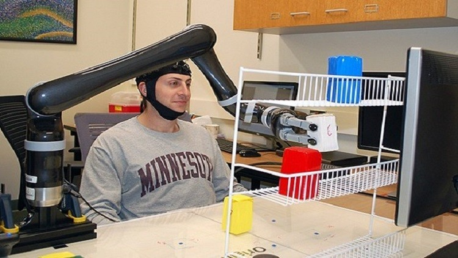

-
-
كيف تحذف رسالة واتس آب من جهاز المستقبِل قبل أن يقرأها؟
لتكمله الخبر
-

تقنية جديدة تتيح التحكم بالروبوت بـ"الأفكار"
لتكمله الخبر
-
-
-
خدمة تجريبية من تويتر لإيصال الأخبار العاجلة
عدد مرات المشاهدهـ (963)
2021/1/22 12:50 PM
بدأت شركة تويتر خدمة تجريبية لإيصال تنبيهات الأخبار العاجلة إلى مستخدميها على الهواتف الذكية.
وأفاد متحدث باسم موقع التواصل الاجتماعي بأن الخدمة متوفرة لبعض مستخدمي تطبيقها على نظام iOS لآبل. ولم تحدد الشركة موعدا لإتاحة هذه الخدمة للجميع.
فقد أرسل تطبيق تويتر، على سبيل المثال، إشعارا عاجلا بشأن عملية الدهس التي وقعت في سوق لعيد الميلاد بالعاصمة الألمانية برلين الاثنين.
وتشير هذه الخطوة إلى رغبة تويتر في دخول مجال التغطية الإخبارية
إعجاب
تعليق
مشاركة
كيف تحذف رسالة واتس آب من جهاز المستقبِل قبل أن يقرأها؟
عدد مرات المشاهدهـ (620)
2019/11/30 20:30 PM
سيشهد واتس آب قريبا ميزة جديدة، وهي إمكانية حذف الرسائل بعد إرسالها وقبل قراءتها من الطرف الآخر، ففي الوقت الحالي لا يستطيع المستخدم سوى حذف الرسائل ضمن جهازه .
ويمكن للمستخدم أن يضغط على أية رسالة مرسلة، وأن يستدعي أمر الإلغاء، والذي سيُمكِّنه من حذفها من المحادثة، وعندها سيتم إزالتها أيضا من سجل المحادثة لدى الطرف المتلقي.
إعجاب
تعليق
مشاركة
تقنية جديدة تتيح التحكم بالروبوت بـ"الأفكار"
عدد مرات المشاهدهـ (312)
2024/10/30 2:25 PM
تمكن علماء من تطوير "حاسوب العقل الوسيط"، أو ما يعرف بـ"واجهة الدماغ الحاسوبية"، بطريقة تسمح للناس بالتحكم في ذراع إلكترونية فقط باستخدام أفكارهم.
وتعتمد التكنولوجيا الجديدة نظام معالجة الإشارات المتقدمة، والتعلم الآلي لتحويل "الأفكار" إلى أفعال، ويقول الباحثون إنها المرة الأولى التي لا يتم فيها عمل
زراعات بالدماغ، وإن هذه التكنولوجيا يمكن استخدامها يوما ما لمساعدة المصابين بالشلل، أو أولئك الذين لديهم أمراض عصبية
إعجاب
تعليق
مشاركة
أبل تعتزم خوض تجربة إنتاج سيارات ذاتية القيادة
عدد مرات المشاهدهـ (620)
2019/11/30 20:30 PM
أعلنت شركة أبل التي تنتج هواتف آي فون الذكية وحواسيب ماك المتطورة، رغبتها علنا الدخول في مجال السيارات ذاتية القيادة ولعب دور في سوقها المتنامية.
ووجه ستيف كينر مدير سلامة المنتجات في شركة أبل رسالة من خمس صفحات إلى الإدارة الوطنية لسلامة المرور على الطرق السريعة في الولايات المتحدة،
أظهر فيها رغبة الشركة في خوضها تجربة إنتاج هذا النوع من السيارات.
وقال كينر " إن الشركة ستستثمر بشكل كبير في دراسة تعلم الآلة و الأتمتة، وهي متحمسة لإمكانيات الأنظمة الآلية في مجالات عدة ومن ضمنها قطاع النقل".
وحثت أبل المشرعين الأميركيين ألا يضعوا قيودا كثيرة على تجربة السيارات ذاتية القيادة والتعامل بشكل متساو بين الصناعات الحالية والصناعات المستقبلية الجديدة في مجال السيارات.
وكانت إدارة الرئيس باراك أوباما قد اقترحت في شهر أيلول/ سبتمبر الماضي إرشادات في 15 نقطة لاختبارات السلامة لتطوير هذا النوع من السيارات، داعية صانعي
السيارات إلى عرض تفاصيل أنظمتهم على المشرعين.
وقد أفادت تقارير بأن شركة أبل عقدت محادثات مع الشركة البريطانية للسيارات "مكلارين" للاستثمار فيها، لكن "مكلارين" قد قللت من أهمية هذه التقارير.
إعجاب
تعليق
مشاركة